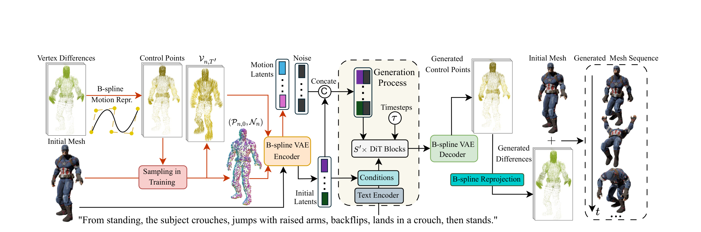
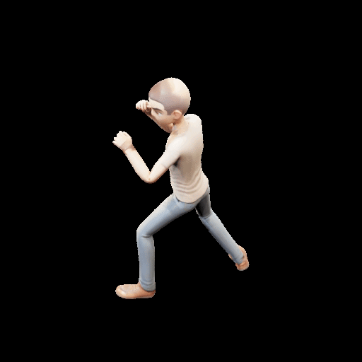

BiMotion generates expressive, high-quality motions for 3D characters from text descriptions using continuous B-spline representations.
BiMotion generates expressive, high-quality motions for 3D characters from text descriptions using continuous B-spline representations.
Text-guided dynamic 3D character generation has advanced rapidly, yet producing high-quality motion that faithfully reflects rich textual descriptions remains challenging. Existing methods tend to generate limited sub-actions or incoherent motion due to fixed-length temporal inputs and discrete frame-wise representations that fail to capture rich motion semantics. We address these limitations by representing motion with continuous differentiable B-spline curves, enabling more effective motion generation without modifying the capabilities of the underlying generative model. Specifically, our closed-form, Laplacian-regularized B-spline solver efficiently compresses variable-length motion sequences into compact representations with a fixed number of control points. Further, we introduce a normal-fusion strategy for input shape adherence along with correspondence-aware and local-rigidity losses for motion-restoration quality. To train our model, we collate BIMO, a new dataset containing diverse variable-length 3D motion sequences with rich, high-quality text annotations. Extensive evaluations show that our feed-forward framework BiMotion generates more expressive, higher-quality, and better prompt-aligned motions than existing state-of-the-art methods, while also achieving faster generation.

Overview. BiMotion uses a B-spline representation for motion generation. During training (red arrow), vertex differences are converted into control points and encoded into motion latents. During inference (black arrow), the initial mesh and the text prompt generate motion latents that are decoded into control points and converted into the generated mesh sequence via B-spline reprojection.

Text-guided motion generation demo: a character performing a martial arts kick.
@inproceedings{wang2026bimotion,
title = {BiMotion: B-spline Motion for Text-guided Dynamic 3D Character Generation},
author = {Wang*, Miaowei and Yan, Qingxuan and Cao, Zhi and Li, Yayuan and Mac Aodha, Oisin and Corso, Jason J. and Vaxman, Amir},
booktitle = {Proceedings of the IEEE/CVF Conference on Computer Vision and Pattern Recognition (CVPR)},
year = {2026},
}